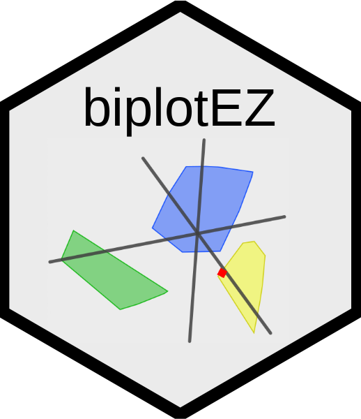
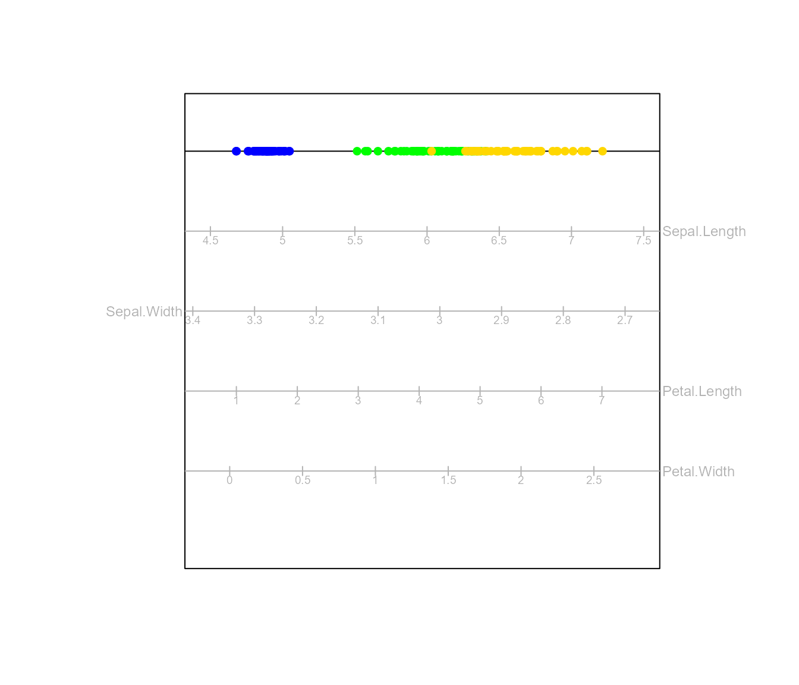
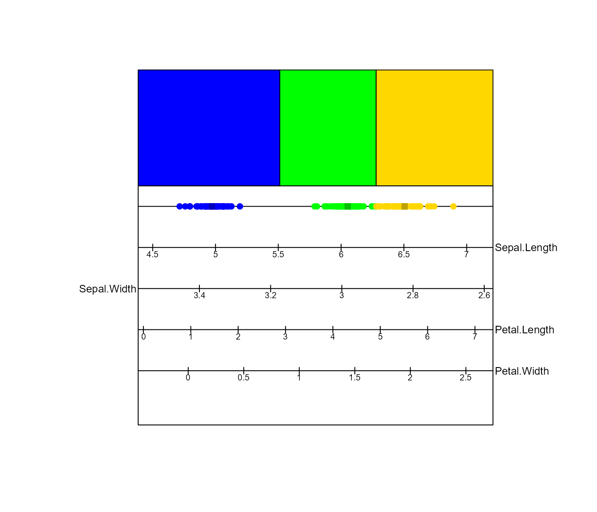
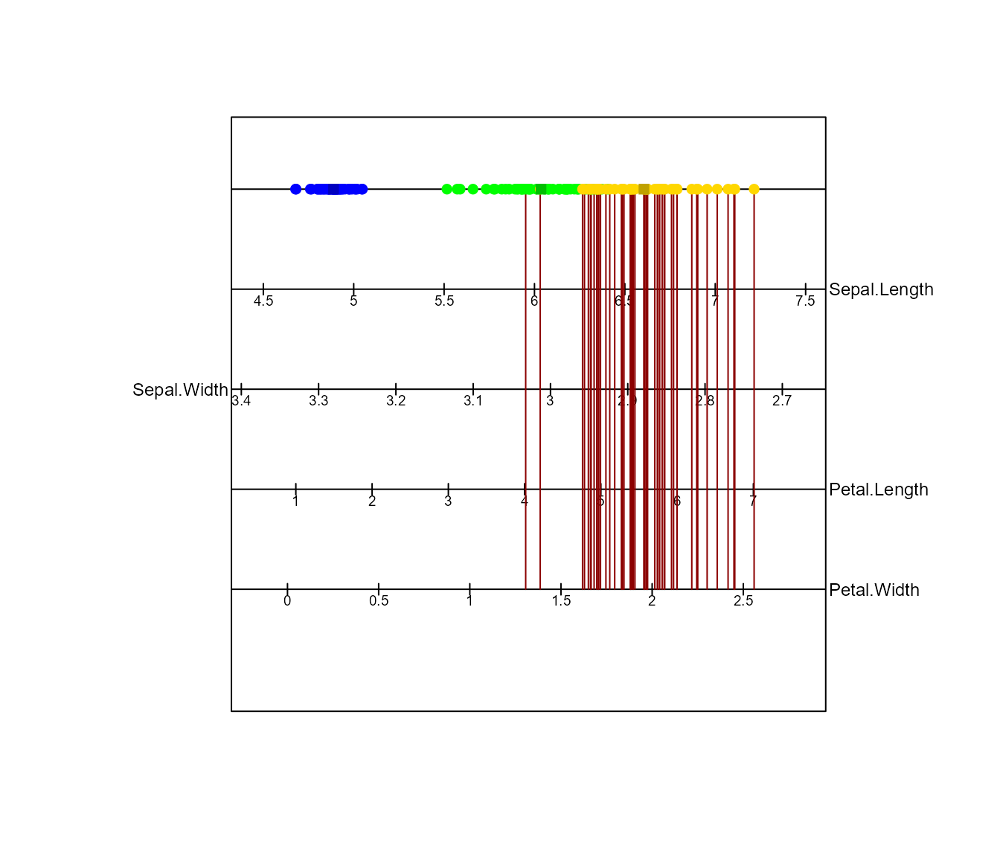
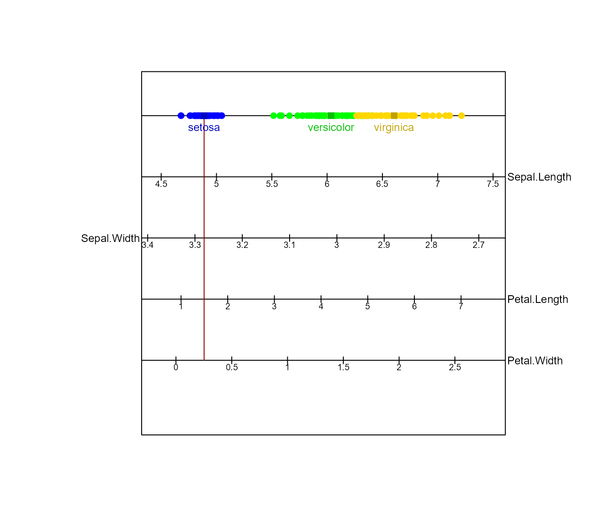
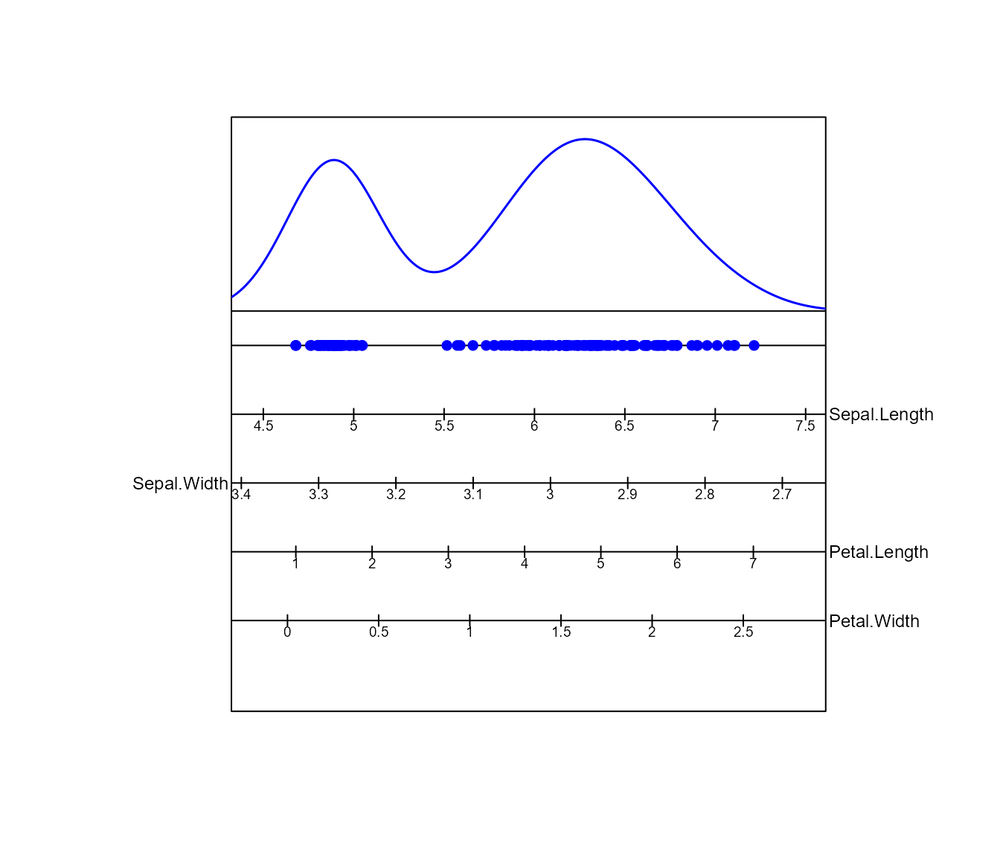

Biplots in 1D
Biplots_in_1D.Rmd
This vignette illustrates how to create one-dimensional biplot. The biplotEZ vignette demonstrates many functions of the functions in the package. The vignette will serve as a supplement to the biplotEZ vignette.
One-dimensional PCA biplot
One-dimensional PCA biplots are obtained by specifying
dim.biplot = 1 in the call to PCA().
The one-dimensional representation of the data is displayed by the colour points on the top horizontal line. The accompanying calibrated variable axes are displayed as horizontal lines below. The variable name is displayed on the side to which the variable increases.

One-dimensional CVA biplot
Similarly for a CVA 1d biplot, dim.biplot = 1 is
specified in the call to CVA(). The one-dimensioal CVA
biplot displays the one-dimensional linear combination that maximises
the between class variance, relative to the within class variance.
Classification using classify()
CVA models can be employed as a classifier. New observations are
classified to the nearest class mean, where the means are indicated by
the shaded squares on the scatter line. The classification regions are
displayed above the scatter line using classify().
bp <- biplot(iris) |> CVA(classes = iris[,5],dim.biplot = 1)|>
axes(col="black") |>
classify(borders = TRUE,opacity = 1)|>plot()
The print() function provides the misclassification
rate, as well as the confusion matrix, of the CVA classifier applied to
the training data.
print(bp)
#> Object of class biplot, based on 150 samples and 5 variables.
#> 4 numeric variables.
#> 1 categorical variable.
#> 3 classes: setosa versicolor virginica
#>
#> Misclassification rate is 0.02
#>
#> Confusion matrix
#> Reference
#> Prediction setosa versicolor virginica
#> setosa 50 0 0
#> versicolor 0 48 2
#> virginica 0 1 49One-dimensional CA biplot
Similarly for a CA 1d biplot, dim.biplot = 1 is
specified in the call to CA(). The one-dimensional biplot
is constructed from the first columns of
and $&\mathbf{V\Lambda^{1-\gamma}}$.
Consider the HairEyeColor example again as discussed in
CA in biplotEZ:
The function interpolate()
interpolate() allows for new observations or axes to be
added to the biplot.
The function newsamples()
The process of adding new samples to the biplot, called interpolation
utilises the functions interpolate() and
newsamples(). These functions work in the same way as in
the call to the two-dimensional biplot. The function
interpolate() accepts the argument newdata to
specify a matrix or data frame containing the new samples to be
interpolated. The function newsamples() operates the same
way as samples() in that the user can specify the
aesthetics of the interpolated samples.
biplot(iris[c(1:50,101:150),1:4])|> PCA(dim.biplot = 1) |> axes(col="black") |>
interpolate(newdata = iris[51:100,1:4]) |> newsamples(col="purple") |> plot()The function newaxes()
To interpolate new variables to the biplot, the function
interpolate() and newaxes() are called. The
function interpolate() accepts the argument
newvariable to specify a matrix or data frame of the same
number of rows in the data specified in biplot() containing
the new variables to be interpolated. The function
newaxes() allows the user to specify the aesthetics of the
interpolated variables.
The function prediction()
Predicting Samples
To add the prediction of samples on the biplot, the
prediction() function is used. The
predict.samples argument takes in a vector indicating
either the row numbers of the samples to predict or set to TRUE
indicating to predict all samples. In the example below, the predictions
for samples 100 to 150 are shown. The aesthetics for the display of the
predictions are arguments in the axes() function:
predict.col and predict.lwd.
biplot(iris) |>
PCA(group.aes = iris$Species,dim.biplot = 1,show.class.means = TRUE) |>
axes(col="black",predict.col = "darkred") |>
prediction(predict.samples=100:150) |> plot()
Predicting Group Means
Similarly, to add the prediction of group means, the function
prediction() is used. The argument
predict.means takes in a vector specifying which group
means to predict. In the example below, only the first group means is
predicted. Important to note that the argument
show.class.means must be set to TRUE in the
PCA() function.
biplot(iris) |>
PCA(group.aes = iris$Species,dim.biplot = 1,show.class.means = TRUE) |>
axes(col="black",predict.col = "darkred") |> means(label=TRUE,which=1:3)|>
prediction(predict.means = 1) |> plot()
Ellipses and Alpha bags
Ellipses are added to a 1d biplot using the ellipses()
function which works in the same way as a 2d biplot. In one dimension
concentration ellipses are simply a confidence interval. The
concentration interval is indicated using rectangles spanning the range
of the interval.
biplot(iris) |> PCA(group.aes = iris[,5],dim.biplot = 1) |>
axes(col="black") |>
ellipses() |> plot()
#> Computing 1.96 -ellipse for setosa
#> Computing 1.96 -ellipse for versicolor
#> Computing 1.96 -ellipse for virginicaThe one-dimensional representation of an Alpha bag will simply be an empirical interval. The empirical interval is indicated using rectangles spanning the range of the interval.
biplot(iris) |> PCA(group.aes = iris[,5],dim.biplot = 1) |>
axes(col="black") |>
alpha.bags(alpha = 0.7) |> plot()
#> Computing 0.7 -bag for setosa
#> Computing 0.7 -bag for versicolor
#> Computing 0.7 -bag for virginicaThe function density1D()
Overlapping points make the distribution of points on the scatter
line difficult to identify. density1D() uses kernel density
estimation (KDE), which adds a density plot to the one-dimensional
biplot.

This KDE may be too smooth to display the distribution of the data.
By changing the parameters of the KDE, we are able to address this
issue. The bandwidth and kernel used in density1D() are
controlled by the arguments h= and kernel=,
respectively. The bandwidth h can take any positive value,
see ?stats::density for more detail. kernel
can take on any kernel supported by stats::density().
biplot(iris) |> PCA(dim.biplot = 1) |> axes(col='black') |>
density1D(h = 0.5 ,kernel = "triangular") |> plot()The high concentration of observations in the right of the plot now
becomes evident. To further explore the distributions of the
observations, we may want to explore the density of groupings in the
data. To do this, simply specify the group.aes= argument in
PCA(). Here the density of the three species of iris is
displayed.
biplot(iris) |> PCA(group.aes = iris[,5],dim.biplot = 1) |>
axes(col="black") |>
density1D() |> plot()To only display the density of certain groups, use the
which= argument in density1D().
The function legend.type()
legend.type adds a legend to the plot. A separate legend
is created for each of the elements by setting each of
samples, means, bags and
ellipses equal to TRUE. Here, we add a legend
for the samples.
biplot(iris) |> PCA(group.aes = iris[,5],dim.biplot = 1, show.class.means = TRUE) |>
axes(col="black") |> density1D() |> samples(opacity=0.5)|> alpha.bags()|>
legend.type(samples = TRUE) |> plot()
#> Computing 0.95 -bag for setosa
#> Computing 0.95 -bag for versicolor
#> Computing 0.95 -bag for virginicaIf other legends are added, they will overlap with the elements of the plot as displayed below.
biplot(iris) |> PCA(group.aes = iris[,5],dim.biplot = 1, show.class.means = TRUE) |>
axes(col="black") |> density1D() |> samples(opacity=0.5)|> alpha.bags()|>
legend.type(samples = TRUE,means = TRUE, bags = TRUE) |> plot()
#> Computing 0.95 -bag for setosa
#> Computing 0.95 -bag for versicolor
#> Computing 0.95 -bag for virginicaBy specifying new=TRUE, the legends will be displayed on
a new plot.
biplot(iris) |> PCA(group.aes = iris[,5],dim.biplot = 1, show.class.means = TRUE) |>
axes(col="black") |> density1D() |> samples(opacity=0.5)|> alpha.bags()|>
legend.type(samples = TRUE,means = TRUE, bags = TRUE, new=TRUE) |> plot()
#> Computing 0.95 -bag for setosa
#> Computing 0.95 -bag for versicolor
#> Computing 0.95 -bag for virginicaFor the CVA biplot legend.type also displays a legend
for classification regions if `
bp <- biplot(iris) |> CVA(classes = iris[,5],dim.biplot = 1, show.class.means = TRUE) |>
axes(col="black") |> classify() |> density1D() |> samples(opacity=0.5)|> alpha.bags()|>
legend.type(samples = TRUE,means = TRUE, bags = TRUE, regions = TRUE, new=TRUE) |> plot() #
#> Computing 0.95 -bag for setosa
#> Computing 0.95 -bag for versicolor
#> Computing 0.95 -bag for virginica
The function fit.measures()
fit.measures() calculates measures of fit for the
biplot. Passing a biplot object which has been piped to
fit.measures() to summary() will output:
- For the plot: Quality of fit.
- For each variable: an Adequacy measure and a measure of Axis Predictivity.
- For each sample: Sample Predictivity
a <- biplot(iris) |> PCA(group.aes = iris[,5],dim.biplot = 1) |> fit.measures()
summary(a)
#> Object of class biplot, based on 150 samples and 5 variables.
#> 4 numeric variables.
#> 1 categorical variable.
#>
#> Quality of fit in 1 dimension(s) = 92.5%
#> Adequacy of variables in 1 dimension(s):
#> Sepal.Length Sepal.Width Petal.Length Petal.Width
#> 0.130600269 0.007144055 0.733884527 0.128371149
#> Axis predictivity in 1 dimension(s):
#> Sepal.Length Sepal.Width Petal.Length Petal.Width
#> 0.8053299 0.1590003 0.9957524 0.9342141
#> Sample predictivity in 1 dimension(s):
#> 1 2 3 4 5 6
#> 0.9859320755 0.9885358364 0.9974032622 0.9858701194 0.9843168833 0.8999107868
#> 7 8 9 10 11 12
#> 0.9904348916 0.9957802734 0.9612785710 0.9923358788 0.9370769165 0.9948836825
#> 13 14 15 16 17 18
#> 0.9875168089 0.9750670327 0.8294906959 0.7529871550 0.9071569468 0.9853898465
#> 19 20 21 22 23 24
#> 0.8616422955 0.9552462766 0.9620201204 0.9652955093 0.9901078239 0.9937624785
#> 25 26 27 28 29 30
#> 0.9810460091 0.9863832711 0.9951903602 0.9788910031 0.9826539385 0.9920053991
#> 31 32 33 34 35 36
#> 0.9923858356 0.9597307230 0.8986110971 0.8460407992 0.9949139602 0.9929589514
#> 37 38 39 40 41 42
#> 0.9371265524 0.9862655235 0.9733166664 0.9912721172 0.9891383317 0.8797484869
#> 43 44 45 46 47 48
#> 0.9825513928 0.9769811411 0.9396840258 0.9875952309 0.9530258191 0.9923056267
#> 49 50 51 52 53 54
#> 0.9503079288 0.9971653130 0.7221680790 0.8953237687 0.8532596845 0.0442100903
#> 55 56 57 58 59 60
#> 0.9129953358 0.6359273436 0.9116787898 0.3571098355 0.8281788080 0.0001270475
#> 61 62 63 64 65 66
#> 0.1332510142 0.8958907297 0.0818459091 0.9526971985 0.2540681791 0.7246059875
#> 67 68 69 70 71 72
#> 0.6197552004 0.1947357248 0.5937494624 0.0051154548 0.8476044276 0.6378818290
#> 73 74 75 76 77 78
#> 0.8806268185 0.8333647070 0.8003003948 0.7880417411 0.8419077254 0.9590386463
#> 79 80 81 82 83 84
#> 0.9582463503 0.2779242770 0.0082643376 0.0606288071 0.1243095987 0.9010013410
#> 85 86 87 88 89 90
#> 0.4112193414 0.7631565205 0.8696344890 0.5516294004 0.3190741381 0.0556990781
#> 91 92 93 94 95 96
#> 0.2922625503 0.9696427131 0.1971557114 0.3235202228 0.3247632177 0.5026574343
#> 97 98 99 100 101 102
#> 0.5643559551 0.9057638532 0.5676221930 0.4180323047 0.9171464166 0.8271416340
#> 103 104 105 106 107 108
#> 0.9806829065 0.9748867821 0.9851812054 0.9634762352 0.1357241699 0.9588447969
#> 109 110 111 112 113 114
#> 0.9664650500 0.9136258044 0.9543465424 0.9836661306 0.9843680241 0.7205977672
#> 115 116 117 118 119 120
#> 0.7597174900 0.9253702336 0.9925388347 0.8904535431 0.9774035332 0.7072260541
#> 121 122 123 124 125 126
#> 0.9631634829 0.6942722608 0.9562507107 0.9637593562 0.9632124205 0.9427733678
#> 127 128 129 130 131 132
#> 0.9657601543 0.9613019987 0.9845972460 0.9236214690 0.9539031336 0.8415331923
#> 133 134 135 136 137 138
#> 0.9775228161 0.9628241776 0.8556597753 0.9327799099 0.8909511203 0.9790497984
#> 139 140 141 142 143 144
#> 0.9273791355 0.9602863486 0.9614110358 0.8945281971 0.8271416340 0.9753298287
#> 145 146 147 148 149 150
#> 0.9351760753 0.9383233979 0.9136490692 0.9866832123 0.8702674447 0.8913242393